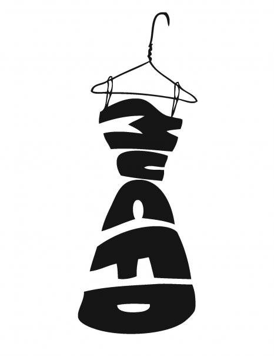

Miami University offers Fashion&Design minor and co-major.The The program emphasizes creativity and experimentation, and offers students the opportunity to develop basic skills in design language, pattern-making and garment construction, historical and narrative contexts, marketing, runway experience, and opportunities to build skills in cognate studio areas, such as costume design, jewelry design, accessories, illustration, CAD, with opportunities to gain international fashion design experience. The minor complements the efforts of Miami University Fashion & Design, which has over 250 student members, and the publication Up Magazine.
